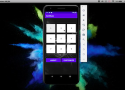
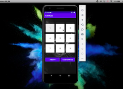
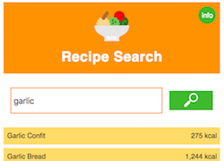
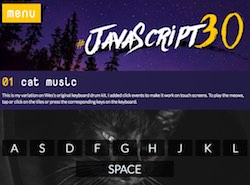
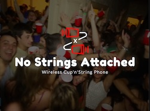

My First Android App
The video is a demo of my final project for CS50 - the famous Harvard Intro to Computer Science online course. I highly recommend the course to any self-taught programmer. It was a blast!
Android App Demo Video Software developer with editorial background
Hi there!
My name is Marta, and I write code for a living. It wasn’t always like that — in fact coding became my full-time job only in 2018. Long before that, as a teenager, I played around with HTML and CSS, made a few websites, but ultimately decided to study Japanese in university.
It was only after I got an MA in East Asian Studies and worked in publishing that I tried JavaScript, saw the results in my browser, and was instantly hooked.
From 2016 to 2018 I was on fire, working my publishing job during the day, writing code at night, and dreaming of the future when I would be coding during the day and playing video games at night.
As a result, what you see in the “Projects” section below are apps and websites I built while learning programming before 2018. The majority of code I wrote afterwards is now a bunch of green tiles on Github, with the exception of my first (and so far last) Android app, which I built in 2020 while taking CS50.
Enjoy my silly apps! I particularly recommend the meowing keyboard, proven to draw cats' attention.
The video is a demo of my final project for CS50 - the famous Harvard Intro to Computer Science online course. I highly recommend the course to any self-taught programmer. It was a blast!
Android App Demo Video I made my first React app while at Bridge School, before I learned Redux, so it relies on component state. Functional programing aside, the highlight for me was adding an orange slice for the loader.
React Recipe Search Wes Bos's JavaScript 30 is a challenge in writing everything in pure JS, with preference for ES6. To keep up the challenge, I built my landing page without libraries as well, including the menu and routing.
Marta's JavaScript 30 Fun trumped programming at Toronto's 2017 Stupid Hackathon, where my brother (full-stack dev) and I came up with a truly useless wireless string telephone. He made the videos, I made the website.
Stupid Hackathon This simple website was my playground for fixed backgrounds. Since I needed content, I wrote an article about best practices in selecting photos for textbook illustrations.
Photo Research
A poet friend asked if I could write a poem in code. I built a choose-your-own-adventure poem with jQuery. I was going for an old terminal feel, but you actually have to click.
Reactive Poem
When I worked in a publishing house, I was building interactive exercises that students would use with their textbooks. Here I used jQuery UI for a drag'n'drop paragraph sorting activity.
Sortable Paragraphs
Thinking of data visualization without using a separate library, I came up with an animated bar chart made out of divs: the values to be shown become the bars' percentage widths.
Bar Chart